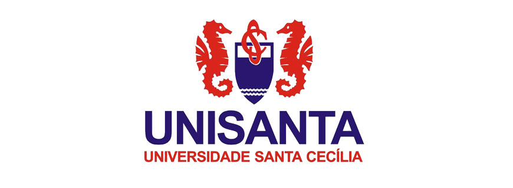

O início profissional
Minha trajetória profissional começou aos 14 anos, de forma informal, em uma loja de ferragens. Aos 18 anos, em janeiro de 2017, fui efetivado e permaneci na empresa até agosto de 2021.
Transformo operações complexas em sistemas web, automações e experiências orientadas por dados.

Da operação à tecnologia: uma história construída com curiosidade, evolução constante e vontade de resolver problemas reais.
Minha trajetória profissional começou aos 14 anos, de forma informal, em uma loja de ferragens. Aos 18 anos, em janeiro de 2017, fui efetivado e permaneci na empresa até agosto de 2021.
Em setembro de 2021, ingressei em uma empresa de telas mosquiteiras como serralheiro. Com o tempo, minha capacidade de organização, resolução de problemas e liderança fez com que eu fosse promovido ao cargo de Gestor Operacional, função que exerço atualmente.
Paralelamente, em 2022, iniciei meus estudos em programação de forma independente, consumindo cursos gratuitos, vídeos no YouTube, documentações e desenvolvendo projetos pessoais.
Em 2023, desenvolvi a primeira versão deste portfólio. Conforme aprendia novas tecnologias e conceitos, atualizava e aprimorava cada parte dele, transformando-o em um reflexo da minha evolução como desenvolvedor.
Em 2025, iniciei minha graduação em Ciência de Dados pela Universidade Santa Cecília, fortalecendo minha base teórica e prática em lógica e algoritmos, modelagem e análise de dados, computação em nuvem, bancos de dados relacionais e não relacionais, estatística e outras áreas fundamentais da tecnologia.
Desde o início da graduação, também desenvolvi dois sistemas que ajudam empresas a organizar seus processos e gerar valor por meio da tecnologia.
Hoje, em 2026, meu principal objetivo é realizar minha transição definitiva para a área de tecnologia, com foco em Engenharia de Software, onde pretendo continuar aprendendo, enfrentar desafios cada vez maiores e contribuir com soluções que façam a diferença.
Universidade Santa Cecília
Brasil
Full-Stack & Dados
Matriz curricular EAD Unisanta com base em programação, estatística, engenharia de software, bancos de dados, cloud, big data e inteligência artificial.
Fundamentos de Sistemas de Informação, Algoritmos, Sistemas Operacionais, Arquitetura de Computadores, Arquitetura de Software e Engenharia de Software Aplicada.
Probabilidade e Estatística, Introdução à Ciência de Dados, Modelagem e Análise de Dados, Visualização dos Dados e Linguagem de Programação aplicada a dados.
Banco de Dados Relacionais e Não Relacionais, Infraestrutura e Operações de Dados, Arquitetura para Big Data, Serviços de Cloud, Aprendizagem de Máquina e Tópicos de IA.
Projetos Integradores ao longo da formação, com apoio de Gestão Empresarial, Empreendedorismo e Inovação, Ética e Cidadania, e Meio Ambiente e Sociedade.
Produtos digitais construídos para organizar operações, automatizar processos e transformar dados em decisões.

Formação acadêmica Fontes institucionais
Fontes institucionais
Centraliza agenda, prontuário, financeiro, permissões e assinaturas em um SaaS odontológico completo.
Agenda, prontuário e financeiro conectados
Ver projeto →
Produto em homologação para implementação, criado para centralizar toda a operação em uma experiência mobile-first.
7 frentes operacionais integradas
Ver projeto →Storytelling interativo que organiza dados públicos e conteúdo complexo em uma experiência clara e acessível.
Narrativa baseada em múltiplas fontes públicas
Ver projeto →Automatiza a criação e o envio de orçamentos, reduzindo etapas manuais e padronizando o atendimento comercial.
Do formulário ao envio pelo WhatsApp
Ver projeto →
Transforma uma base pública extensa em uma leitura visual sobre concentração, setores e tipos de benefício.
Base pública convertida em leitura visual
Ver projeto →Esteira em movimento — passe o mouse para pausar
Stack aplicada ao produto principal, da interface mobile-first à API, persistência, autenticação, mapas e geração de documentos.
Tecnologias usadas para construir o SaaS, integrar autenticação, armazenamento, regras de acesso, pagamentos e validação.
Ferramentas aplicadas à exploração de dados, visualização, dashboards e narrativas digitais baseadas em fontes públicas.
Tenho experiência prática construindo sistemas reais com foco em dados, automação e desenvolvimento full-stack. Vamos conversar sobre o seu próximo projeto!